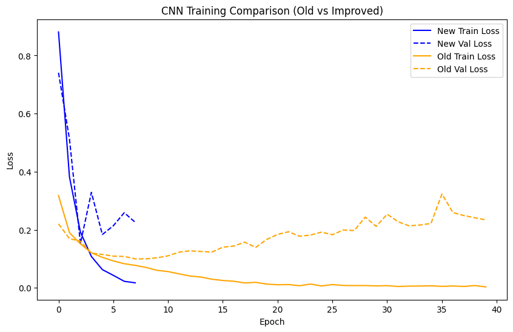
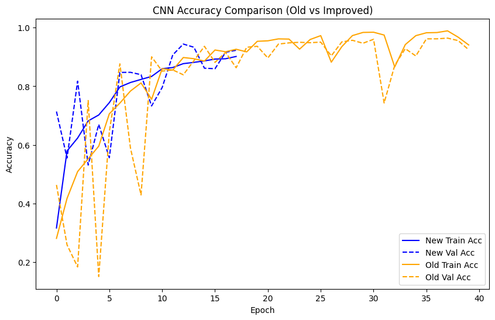
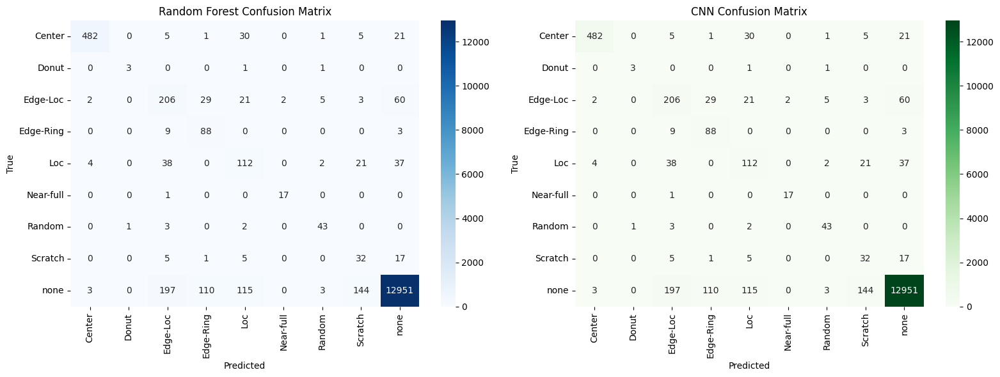
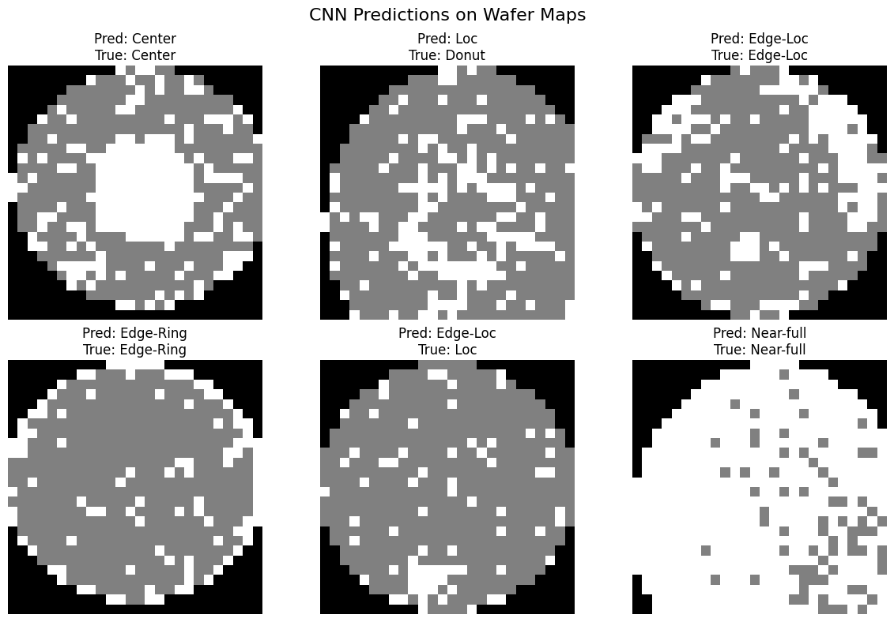

WM811K analysis of semiconductor wafer failure patterns using classical machine learning and convolutional neural networks. This report summarizes the current executed outputs in test2.ipynb, including the updated preprocessing, model comparison, and visual evaluation.
The code, notebooks, and project materials are hosted in the Machine Learning Class repository.
github.com/sheebos/Machine-Learning-Class-RepoThe wafer map data comes from the WM811K Wafer Map dataset on Kaggle.
kaggle.com/datasets/qingyi/wm811k-wafer-mapBackground for wafer map failure pattern recognition and similarity ranking.
doi.org/10.1109/TSM.2014.2364237Wafer maps are spatial records of semiconductor test results. Each location on a map corresponds to a die on the wafer, and the pattern of passing and failing dies can reveal clues about process problems, equipment drift, contamination, edge effects, scratches, or other manufacturing issues.
Wu, Jang, and Chen describe wafer map failure pattern recognition as a useful tool for identifying failure causes and supporting large-scale semiconductor manufacturing analysis. This project builds on that background by treating wafer maps as image-like arrays and comparing a Random Forest baseline with CNN-based models for defect classification.
The class imbalance visible in this dataset is important: most labeled wafers belong to the none category, while several defect patterns have far fewer examples. This imbalance helps explain why accuracy alone can be misleading and why weighted F1 score, macro F1 score, confusion matrices, and per-class reports are included in the results.
(74206, 26, 26).X.astype("float32") / 2.0.In the current test2.ipynb run, the old CNN is the strongest model by both accuracy and weighted F1. The improved CNN is more controlled during training because it uses class weights, early stopping, and learning-rate reduction, but its final test score is slightly lower than the old CNN in this run.
The current run keeps the cleaner pipeline changes: stratified splits, one consistent validation set, normalized CNN input values, a fixed Random Forest split, and no oversampling. Oversampling was tested but removed because it made the learning curves less stable for this iteration.
| Model | Accuracy | F1 Score |
|---|---|---|
| Random Forest | 0.9586 | 0.9483 |
| CNN (Old) | 0.9666 | 0.9669 |
| CNN (Improved) | 0.9555 | 0.9578 |
This version keeps the same project goal and visual reporting format, but updates the results to match the current test2.ipynb iteration.
| Change | Current Notebook Choice | Why It Matters |
|---|---|---|
| Stratified splitting | Train, validation, and test sets keep class balance | Rare classes stay represented during training and evaluation. |
| Fixed validation set | Old and improved CNN use the same validation comparison | The training curves are easier to compare fairly. |
| Input normalization | X.astype("float32") / 2.0 |
CNN training is more numerically stable. |
| Random Forest alignment | Random Forest uses the same split as the CNN test set | Model scores are compared on the same samples. |
| Improved CNN callbacks | EarlyStopping and ReduceLROnPlateau | Training stops before the model drifts too far past its best validation loss. |
The label distribution is highly imbalanced, with the none class dominating the available labeled samples.
failureType none 147431 Edge-Ring 9680 Edge-Loc 5189 Center 4294 Loc 3593 Scratch 1193 Random 866 Donut 555 Near-full 149 Name: count, dtype: int64
This is the classification report printed in the notebook for the current Random Forest evaluation.
precision recall f1-score support
0 0.98 0.88 0.93 545
1 1.00 0.20 0.33 5
2 0.74 0.39 0.51 328
3 0.93 0.40 0.56 100
4 0.68 0.10 0.17 214
5 1.00 0.94 0.97 18
6 1.00 0.33 0.49 49
7 0.80 0.13 0.23 60
8 0.96 1.00 0.98 13523
accuracy 0.96 14842
macro avg 0.90 0.49 0.57 14842
weighted avg 0.95 0.96 0.95 14842




The current notebook loads the WM811K CSV export, parses wafer-map strings, cleans label fields, removes unlabeled rows, validates maps, resizes maps to a uniform 26 by 26 grid, label-encodes defect categories, creates stratified train/test/validation splits, normalizes CNN inputs, trains Random Forest and CNN models, and evaluates predictions using accuracy, weighted F1, classification reports, confusion matrices, learning curves, and example wafer-map predictions.
Wu, Ming-Ju, Jyh-Shing R. Jang, and Jui-Long Chen. "Wafer Map Failure Pattern Recognition and Similarity Ranking for Large-Scale Data Sets." IEEE Transactions on Semiconductor Manufacturing 28, no. 1 (February 2015): 1-12. DOI: 10.1109/TSM.2014.2364237.